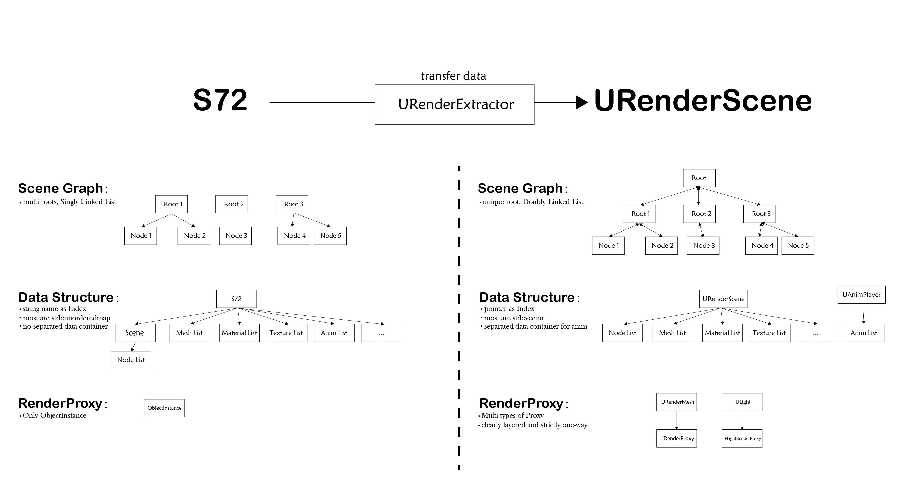
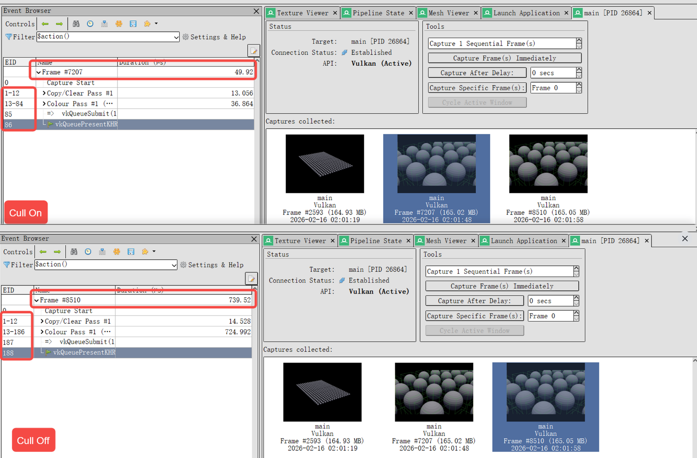
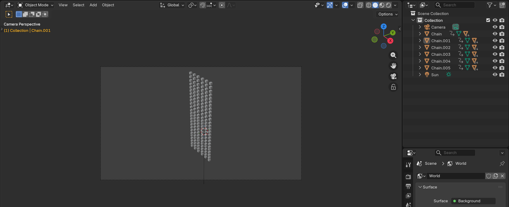
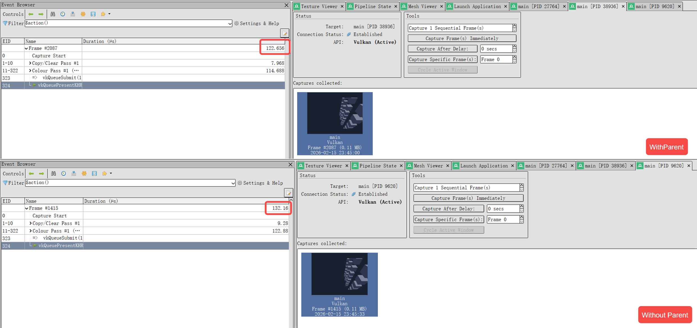
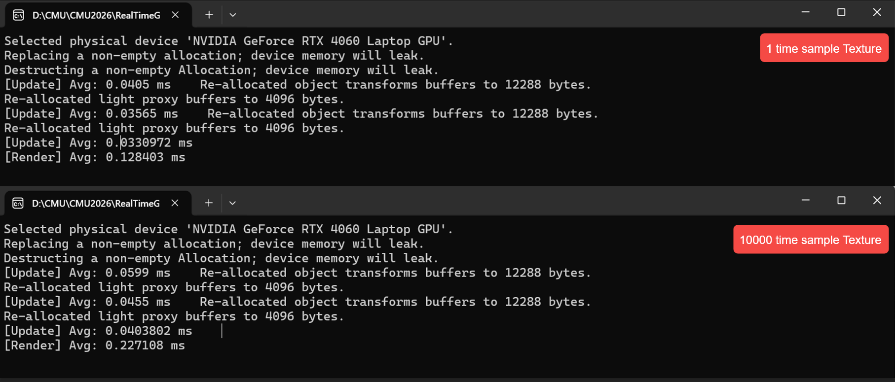
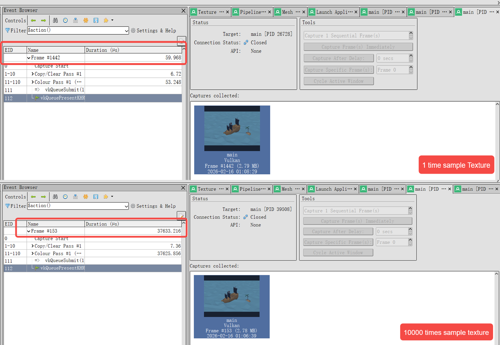

I did not directly adopt the S72 data structure; instead, I implemented a custom URenderScene. In the Scene Graph, UNode is organized as a doubly linked structure, and each URenderScene contains exactly one root node. I replaced name-based indexing with pointer-based indexing, and most containers use std::vector instead of std::unordered_map to improve memory contiguity and cache efficiency. Animation data is separated from the scene structure and managed independently by UAnimPlayer. Based on this data-oriented design, the system supports more flexible render proxies while keeping the core data lightweight.
The advantage of this design is that it gives me greater flexibility in handling data, and data scripts can be organized more easily. What I have not fully completed, however, is a complete separation between data and logic.

Pirate Ship
For the ocean, I created the illusion of flowing water by moving the entire surface. The pirate ship is given a basic rotational motion to simulate the impact of waves.The trees sway slightly to suggest sea wind passing through. The pirate ship also fires cannonballs, which are implemented using keyframe-based position (K-position) animation.
Provide a short overview of how to use your viewer.
Document the command-line arguments that can be used to control your viewer. Include both the command-line arguments required by the assignment statement and any additional arguments you decided to add.
--debug, --no-debug -- required -- Turn on/off debug and validation layers.--physical-device name -- required -- Run on the named physical device--drawing-size w h -- required -- Set the size of the windows of w h--scene scene.s72 -- required -- load scene from scene.s72--camera camera001 -- required -- active camera is camera001--headless -- required -- start exe with headless mode --cull CULLMODE -- required -- choose your cull mode, now only has NONE | NORMALDocument the keyboard and mouse controls used to control your viewer when run interactively. Note that the controls below are placeholders not requirements.
The purpose of this section is to get you to think critically about your code by providing evidence sufficient to demonstrate to course staff that it works. These thoughts may also help you improve the code as you work on it in A2 and beyond.
As the first image I put on the top.
Critical file: RenderExtractor.hpp, RenderScene.hpp, AnimationPlayer.hpp
I use URenderExtractor to convert the S72 data into my URenderScene structure. URenderScene gathers all vertex data and stores it in a dedicated std::vector. In the UAssignmentOne constructor, this vector's data is uploaded to the GPU vertex buffer. When URenderScene is created, each URenderMesh generates an FMeshRenderProxy. In UAssignmentOne::render, the transform matrix of each FMeshRenderProxy is synchronized and the draw calls are issued. Frustum culling is performed in UAssignmentOne::update, which updates the visibility flag of each FMeshRenderProxy.
If you want to check the scene, please just input bin\main on the console.
AssignmentOne::on_input listens for keyboard input. It updates CameraMode, ActiveCameraIdx, rtg.configuration.debug, and CullingMode. These values are then read in update, where they are converted into the final camera data used to build the projection matrix and also affect the logic used to populate LineVertices.
The core logic of the culling test is implemented in CullingUtils.cpp.
It is called by URenderScene::UpdateVisibleMesh and is used to update the visibility parameters of each FMeshRenderProxy.
My approach : Separating Axis Theorem(SAT). The method checks for an axis where the projections of two shapes don't overlap; if found, they don't intersect.
To test an OBB against a frustum, it checks: frustum face normals, OBB axes, and cross products of their edges.
This allows early exit if a separating axis is found, but the edge cross-product checks are costly.
Also include evidence that your culling works on any particularly difficult cases you may have thought up (include .s72 / .b72 files as appropriate).
Please refer to Scenes/A1Cull.s72. It contains two cameras: one that can render all meshes in the scene, and another that only renders a subset of the meshes. Clearly, culling has little to no effect for the former, while it provides a noticeable performance improvement for the latter.

UAnimInstance stores the keyframe data, while UAnimPlayer evaluates the data from UAnimInstance, applies it to UNode, and marks the node as dirty. UScene contains an Update function that updates the transform data of the render proxies under each UNode based on the dirty flag.
Note: The animation loops automatically by default. Press P to immediately replay it.
I created the CPU performance bottleneck mainly by increasing the depth of the parent-child node hierarchy. The more hierarchical levels there are, the greater the CPU cost of computing the transforms.
I created a chain made of cubes, where each chain has a 24-level hierarchy. Then, in Blender, I duplicated the scene and removed all parent-child relationships while preserving each cube's transform. As a result, the only difference between the two scenes is that one has hierarchical relationships and the other does not.

On the CPU side, I use the TRACE_SIMPLE_CLOCK macro to measure the execution time of a scope (see Profile.hpp for the detailed implementation).
For GPU timing, I use a RenderDoc frame capture to approximate the GPU cost.
HardwareInfo: NVIDIA GeForce RTX 4060 Laptop GPU and CPU:Intel(R) Core(TM) i7-14700HX (2.10 GHz)
As shown in the two videos, the scene with parent-child relationships has a noticeably longer CPU update time than the scene without parents. Based on the GPU time approximated from the RenderDoc capture, there is almost no difference between the two.

I didn't apply any changes to the scene itself. I only added the repeated texture sampling logic shown in the figure to the fragment shader. (check lambert.frag)
On the CPU side, I use the TRACE_SIMPLE_CLOCK macro to measure the execution time of a scope (see Profile.hpp for the detailed implementation). For GPU timing, I use a RenderDoc frame capture to approximate the GPU cost.
As shown in the console screenshot below, the CPU time increases slightly. However, the GPU time measured in RenderDoc increases by nearly 600 times.


In each subsection, include a description of what you tried (including references to your code) and evidence of where (and if) the optimization actually did improve performance. Report -- at a minimum -- frame times for the same scene collected in headless mode with the optimization on and off. Ideally, develop a scene for which the optimization does improve performance and another scene for which it does not.
It would be much more convenient if we could submit a GitHub link for online compilation, similar to how Gradescope works. Also, having a standalone checklist or a table for the final submission requirements would be a lot clearer than the current assignment website.